Hi, everyone,
Mark and I hope that you have enjoyed the year 2022!
Each December when I sit down to put together this year end / new year note, I start by going through all of the photos that Mark (the official family photographer among the two of us!) took over the year, to remind myself of the events of our year. Being a geeky mathematician, this year I decided to add up the number of photos I looked at, and thought you might find some numbers interesting: Mark took 8197 photos in 2022 so far. The most frequent subject was the family of foxes in our back yard, at 488 photos (and he took a few more this morning that didn't make it into that count, so I'm guessing that the final tally for 2022 may reach 500!). The next most common subject was the moon, at 229 photos from the total eclipse on May 15 and the occultation of Mars by the moon on December 7.
| 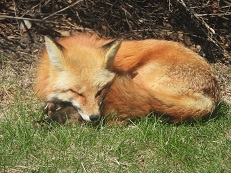 | 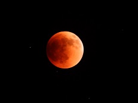 |
This year we have continued to work from home. We remain very active with advising students, and have remotely participated in a lot of conferences. This fall I had a new kind of teaching experience - for the first time, I taught an "asynchronous online" course, which is a course that doesn't have any official meeting time. The workload was very high, writing lots of reading materials and designing questions for (and moderating) online discussions among the students, and before I taught the course, I worried that I (and the students) would dislike the lack of contact we'd have in that format. But the opposite was true - I really enjoyed the format, and so did they. Most of them came regularly to my "office hours" to chat with each other and with me, and I got to know them better than I often do for students in an in-person larger class, which was really neat. Mark is slated to teach a different class in this format in the coming semester, too.
Most of the other photos from our year were taken on day trips from Lincoln. One of the highlights of our year was a visit to Waubonsie State Park in Iowa in June, where we encountered thousands (literally) of hackberry emperor butterflies swarming the park. They were in the air and on the plants in the park, but - mysteriously to us - they also seemed to be trying to eat the pavement on the park road, and they liked landing on us and our car. At the same time there were many other butterflies, including this zebra swallowtail. Nearby, on another daytrip in Iowa, a bald eagle posed very close to us.
| 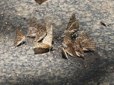 | 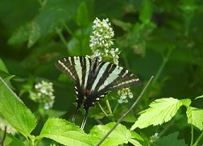 | 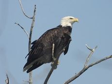 |
Here in Nebraska other treats were in store at Indian Cave State Park. One day this summer we spent a lot of time next to a stand of common milkweed, watching the many birds and butterflies that came to visit the flowers, including a yellow warbler, ruby-throated hummingbird, and regal fritillary. In the fall we went back and found the hillsides covered in bright red sumac, with yellow trees above - beautiful!
| 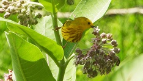 | 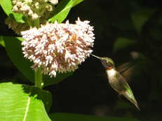 |
| 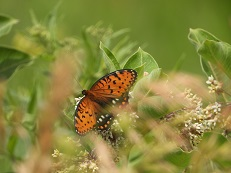 | 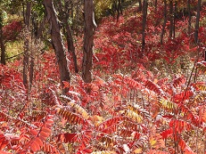 |
One day after we came home from an excursion to a park, a very unexpected bit of nature appeared in our front yard, namely a snapping turtle. After exciting the interest of our neighbor's family (particularly their cat!), eventually it walked up the street and back to the pond+creek system it lives in.
| 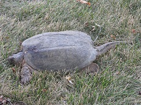 | 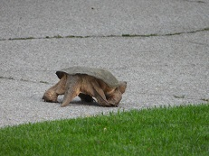 |
There were many more beautiful scenes to reminisce over this week, and we picked out a few more of our favorite bird and flower pictures: A killdeer, a (shy) indigo bunting, and trumpeter swans at sunset, and dame's rocket, blackberry lily, and common arrowhead.
| 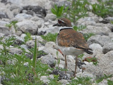 | 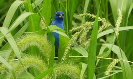 | 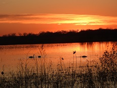 |
| 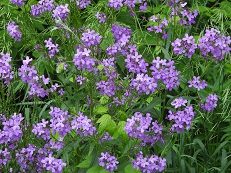 | 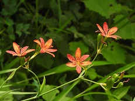 | 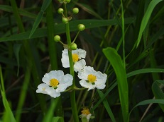 |
Happy new year to all of you! Mark and I hope that you are well and wish you the best for 2023.
Susan